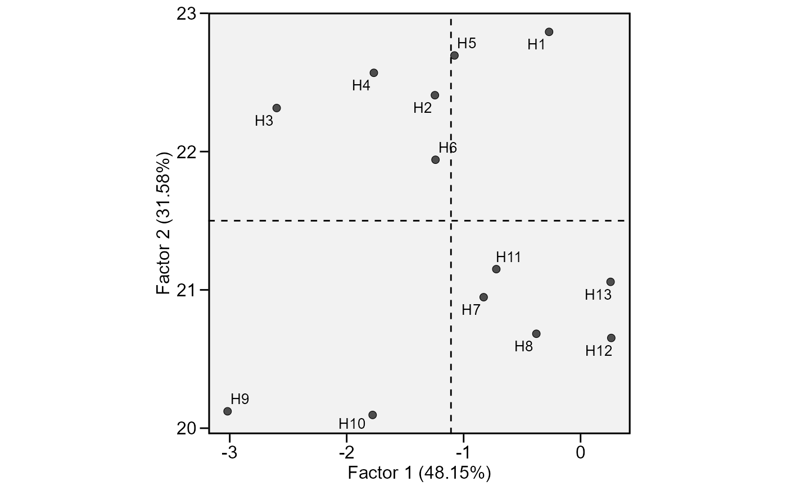

This function plot the scores for genotypes obtained in the factor analysis to interpret the stability
# S3 method for ge_factanal plot( x, var = 1, plot_theme = theme_metan(), x.lim = NULL, x.breaks = waiver(), x.lab = NULL, y.lim = NULL, y.breaks = waiver(), y.lab = NULL, shape = 21, col.shape = "gray30", col.alpha = 1, size.shape = 2.2, size.bor.tick = 0.3, size.tex.lab = 12, size.tex.pa = 3.5, force.repel = 1, line.type = "dashed", line.alpha = 1, col.line = "black", size.line = 0.5, ... )
Arguments
| x | An object of class |
|---|---|
| var | The variable to plot. Defaults to |
| plot_theme | The graphical theme of the plot. Default is
|
| x.lim | The range of x-axis. Default is |
| x.breaks | The breaks to be plotted in the x-axis. Default is
|
| x.lab | The label of x-axis. Each plot has a default value. New
arguments can be inserted as |
| y.lim | The range of x-axis. Default is |
| y.breaks | The breaks to be plotted in the x-axis. Default is
|
| y.lab | The label of y-axis. Each plot has a default value. New
arguments can be inserted as |
| shape | The shape for genotype indication in the plot. Default is
|
| col.shape | The shape color for genotypes. Must be one value or a vector
of colors with the same length of the number of genotypes. Default is
|
| col.alpha | The alpha value for the color. Default is |
| size.shape | The size of the shape (both for genotypes and
environments). Default is |
| size.bor.tick | The size of tick of shape. Default is |
| size.tex.lab | The size of the text in the axes text and labels. Default
is |
| size.tex.pa | The size of the text of the plot area. Default is
|
| force.repel | Force of repulsion between overlapping text labels. Defaults to 1. |
| line.type | The type of the line that indicate the means in the biplot.
Default is |
| line.alpha | The alpha value that combine the line with the background
to create the appearance of partial or full transparency. Default is
|
| col.line | The color of the line that indicate the means in the biplot.
Default is |
| size.line | The size of the line that indicate the means in the biplot.
Default is |
| ... | Currently not used.. |
Value
An object of class gg, ggplot.
See also
Author
Tiago Olivoto tiagoolivoto@gmail.com
Examples
# \donttest{ library(metan) library(ggplot2) model = ge_factanal(data_ge2, env = ENV, gen = GEN, rep = REP, resp = PH) plot(model)# }